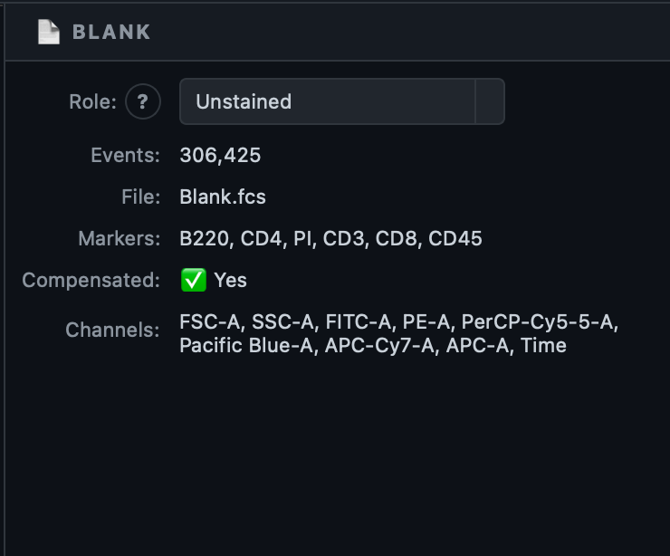
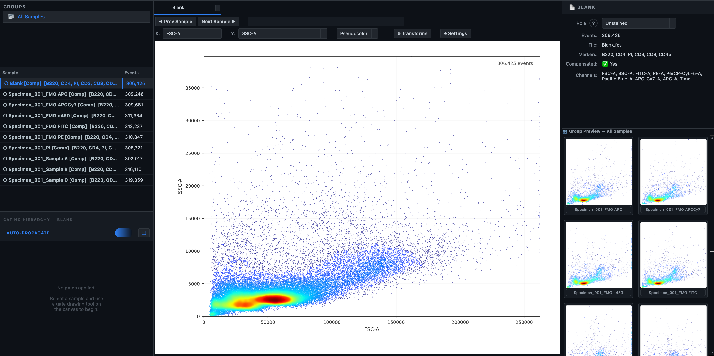
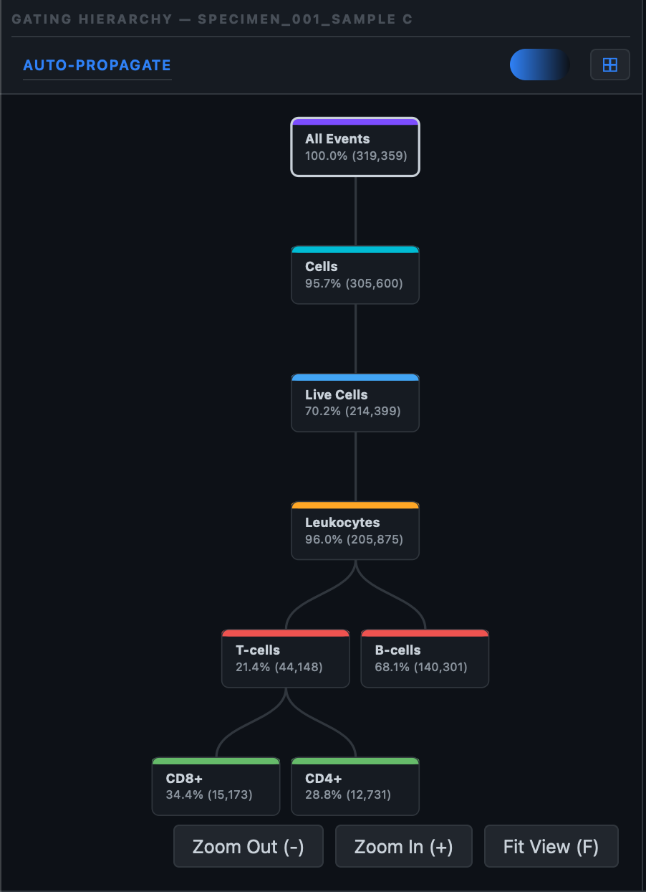
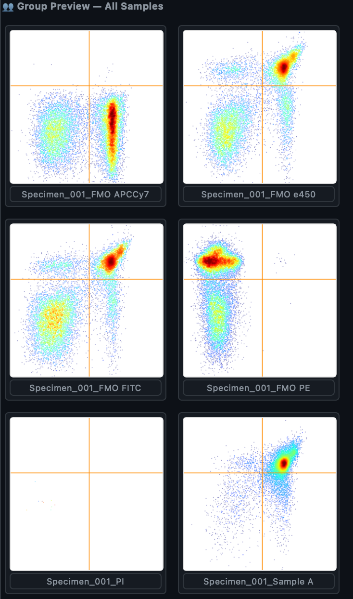

Workspace
The Workspace tab is home base for your analytical session in Karcytics. It's where you import .fcs files, tag each one with a Role, organize samples into Groups, and — once files are loaded — open any sample to start plotting. Everything downstream (compensation, gating, statistics) depends on decisions made here.

1. Importing Data
To begin an analysis session, you must load your raw event data:
- Click ➕ Add Samples in the Workspace ribbon.
- Select one or more
.fcsfiles from your filesystem. - If you select files located outside of your current Karcytics project's
assetsdirectory, Karcytics will automatically prompt you to copy them into the project workspace.
Tip
We strongly recommend copying files into the project workspace when prompted. This ensures your project remains portable and self-contained, preventing broken links if you move the project folder.
2. Experimental Metadata Management
Properly configuring your datasets is critical, as algorithmic workflows (like automated compensation and UMAP) rely heavily on accurate metadata.
Assigning Sample Roles
By default, newly parsed datasets are assigned the generic role of Other. To enable algorithmic workflows, assign a more specific role to each sample:
- Double-click a sample in the Sample List (left panel) to open it, or select it without opening it.
- In the Properties Panel (right), locate the Role dropdown and assign one of the following:
- Unstained: No dye — establishes the autofluorescence baseline used in compensation.
- Single Stain: One fluorophore only — used to compute the orthogonal spillover matrix during compensation.
- FMO Control: Fluorescence Minus One; every dye except one, used to find the true background for that marker before gating.
- Isotype Control: Validates antibody specificity.
- Full Panel: A real, fully stained experimental sample.
- Other: The default for anything that doesn't fit the roles above.

Bulk Role Assignment
For large cohorts, manually assigning roles one at a time can be tedious. Click 🏷️ Bulk Assign Roles in the ribbon to open a dialog where you can select multiple samples, pick a single role from the same list above, and apply it to all of them at once.
Dataset Grouping
For longitudinal studies or multi-patient experimental cohorts, organize samples systematically:
- Click 📁 Create Group in the Workspace ribbon.
- Drag samples from the Sample List into the new group in the Groups panel above it.
- Every sample starts out in the default All Samples group; a sample can belong to a custom group as well.
Groups control gate propagation: draw a gate on one sample and, if Auto-Propagate is on, it's copied automatically to every other sample in the same group. You can also push a gate to the group manually at any time with 📋 Copy Gates on the Gating ribbon.
3. Opening a Sample: The Plot View
Double-clicking any sample in the Sample List opens it as a new tab in the center canvas — this is where the bulk of your day-to-day work happens, whether you got here from Workspace, Compensation, Gating, or Pipeline. If you already have a gate selected in the Gating Hierarchy, Karcytics preserves that context and opens the new sample at the same population instead of resetting you to the root.

Axis controls
A control bar sits directly above the plot:
- X: and Y: dropdowns — pick which channel/marker goes on each axis. A new plot defaults to FSC-A vs. SSC-A. For a Histogram, the Y dropdown is replaced by a fixed Count axis.
- Display mode dropdown — see Plot type below.
- FMO Overlay: dropdown — only shown in Histogram mode; overlays a chosen FMO control's distribution on top of the current sample's for boundary comparison.
- ⚙ Transforms and ⚙ Settings buttons — see the next two sections.
The axes won't jump around on you
The first time you pick a channel for an axis, Karcytics calculates the zoom once and locks it for that channel across every sample in the group. Switching between controls and real samples never re-zooms or jumps the view out from under you.
Plot type
The Display mode dropdown switches between six views of the same population:
| Mode | What it shows |
|---|---|
| Pseudocolor | Density-shaded 2D scatter — the default, high-event-count view |
| Dot Plot | Individual events as discrete points |
| Contour | Density contour lines over the 2D space |
| Histogram | 1D distribution of a single channel (Count on Y) |
| CDF | Cumulative distribution function of a single channel |
Transform
Click ⚙ Transforms to open the Axis Scaling & Transforms dialog — a tabbed panel with one tab per axis (X/Y). Each tab offers three scale types:
- Linear — raw channel values, unscaled.
- Log — logarithmic; undefined at zero and can't display negative values.
- Biexponential (Logicle) — linear near zero, logarithmic at the extremes, so compensated data that dips slightly negative still renders correctly instead of clipping. Selecting it reveals its own Biexponential (Logicle) Parameters sub-panel for fine-tuning the transform. This is the default and recommended scale for compensated fluorescence data — see Scientific Logic for the math.
Seeing a clipped edge?
By default the plot trims a small percentage of extreme outliers so a stray spike doesn't blow out your scale. If a population looks cut off at the edge, open the Transforms dialog and reduce the Outliers percentage for that axis.
Settings (per-plot rendering)
Click ⚙ Settings to open a rendering dialog scoped to whichever Display mode is currently active — its title changes accordingly (e.g. "Pseudocolor Settings", "Histogram Settings"). Its subtitle notes that changes apply globally to all open plots of that mode, not just the one you opened it from. See Global Rendering Settings below for the full field list per mode.
Gating Hierarchy
The Gating Hierarchy panel (left sidebar) shows the current sample's gate tree, labeled GATING HIERARCHY —
- Double-click a node to navigate the plot into that population.
- Right-click a gate for Rename Gate, Delete Gate, and (when applicable) Propagate Gate to All Groups. The root population can't be renamed or deleted.
- + / − buttons zoom the tree view; Fit View (or pressing F with the mouse over the tree) fits it to the window; ⊞ opens an All Samples Overview popup.

Group Preview
The Group Preview panel lives inside the Properties Panel on the right, below the sample's live statistics. It renders a small grid of thumbnail plots — one per other sample in the current group — so you can see a gate you're drawing land on every peer sample in real time. A sample that doesn't yet have the matching population shows "Not gated on this sample" instead of a thumbnail.

4. Global Rendering Settings
The ⚙ Settings button on any plot's axis control bar opens a rendering dialog for the currently active plot type. Despite being opened from one plot, its changes apply to every open plot using that same mode — the dialog itself says so in its subtitle.
Pseudocolor (and similarly for other modes) exposes:
- Quick Presets — Standard, Publication, and Fast Preview, one-click combinations of the settings below tuned for on-screen exploration, print-quality export, and fast interactive panning respectively.
- Colormap — the color scale used for density.
- Max Events — a cap on how many events are rendered at once, with quick-set buttons.
- Point Size and Opacity — geometric marker size and alpha-transparency.
- Population Detail — resolution of the underlying density grid. Higher is sharper (and slower); lower is faster for exploratory panning.
- Population Smoothing — the Gaussian smoothing applied to population densities, for a smoother, more continuous cloud.
- Background Suppression — a noise-floor threshold that maps low-density scatter to a flat baseline color.
- Color Floor and Color Contrast — fine control over how density maps to color intensity.
Dot Plot, Histogram, and Contour modes have their own settings panels tailored to that view — for example, Histogram's panel controls bar color, fill style, an automatic bin count (Sturges' rule) or a manual one, an optional smooth KDE overlay, and FMO-overlay threshold options; Contour's panel adds filled-vs-line contours and an optional sparse dot underlay.
Tip
Use Fast Preview while you're actively exploring and drawing gates, then switch to Publication before exporting a figure — it's faster than tuning each field by hand.